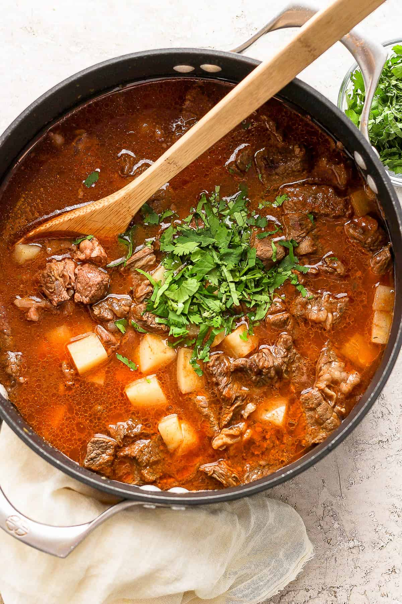

Beef and Potato Stew

Description
Carne con papas (Meat with potatoes) is a traditional Mexican stew made with beef and potatoes cooked in a tasty sauce made of
tomatoes, garlic, onions, and peppers. This popular meat and potatoes dish tastes great when served with rice
and tortillas and is a classic Mexican comfort food.
Unlike European beef stews, this has a tomato sauce base, which gives it a lovely, slightly sweet, acidic
brightness. The peppers and Mexican spices in the broth create a unique flavor profile that tastes great on a
cold winter day and marries well with authentic Mexican rice, cilantro lime rice, or just some plain white rice
and warm flour tortillas.
Ingridients
- ½ green bell pepper, seeded and chopped
- ½ small white onion, chopped
- 3 cloves garlic, crushed
- 1 ¼ teaspoons ground cumin, divided
- ¼ teaspoon salt
- ⅛ cup olive oil
- 1 tablespoon olive oil
- 2 tablespoons achiote powder
- 2 (8 ounce) cans tomato sauce
- 2 pounds beef stew meat, cut into 1 inch cubes
- 2 white potatoes
- 4 cups water, or as needed
- 1 cup white wine
- 6 cubes beef bouillon
Steps
- Combine bell pepper, onion, garlic, 1/4 teaspoon cumin, and salt in a blender. Pulse while pouring 1/8 cup olive oil through the top of the blender. Blend until smooth; set aside.
- Heat 1 tablespoon olive oil in a pressure cooker on medium heat. Sauté pepper and onion mixture for 1 minute, then stir in achiote powder and remaining 1 teaspoon cumin. Cook for 1 minute, then stir in tomato sauce.
- Return to a simmer, then add beef; let simmer for 5 minutes. Stir in potatoes. Pour in water and wine. Drop in bouillon cubes. Bring to a boil and cook for 1 minute. Add water, if necessary, to cover.
- Cover with the lid of the pressure cooker. Following manufacturer's directions to cook under 15-pound pressure for 30 to 45 minutes.